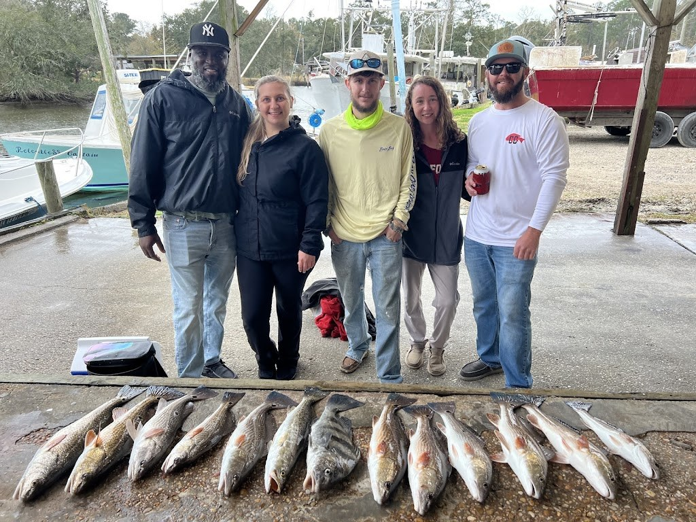
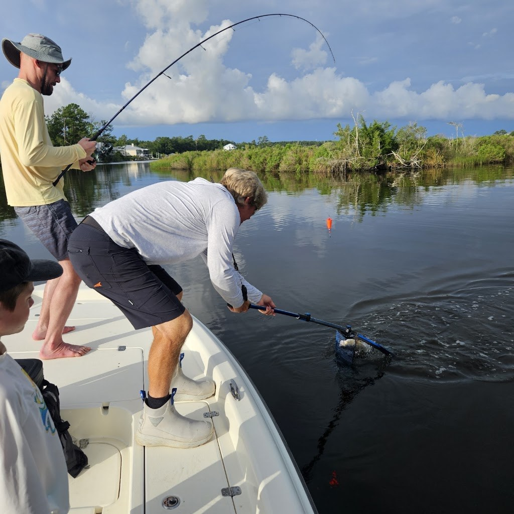
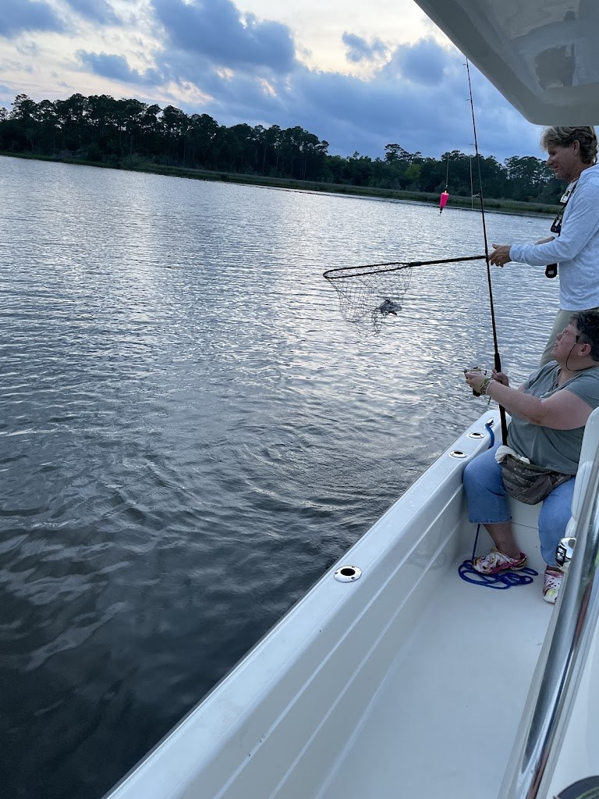

Visit Bama Bandit Sport Fishing
Inshore fishing charters in Gulf Shores and Bon Secour with Captain Shawn Slattery, on a 25-foot Shearwater.
Address: 16249 County Road 49 South, Bon Secour, AL 36511
Phone: (251) 201-9172
Gallery



All three photos are real photos from the business's Google Maps listing. They show a group at the dock behind a row of redfish, a fish being netted from the bow of a boat, and a woman reeling in a fish at dusk.
Contact
Bama Bandit Sport Fishing serves Bon Secour, AL. Questions? Call (251) 201-9172.